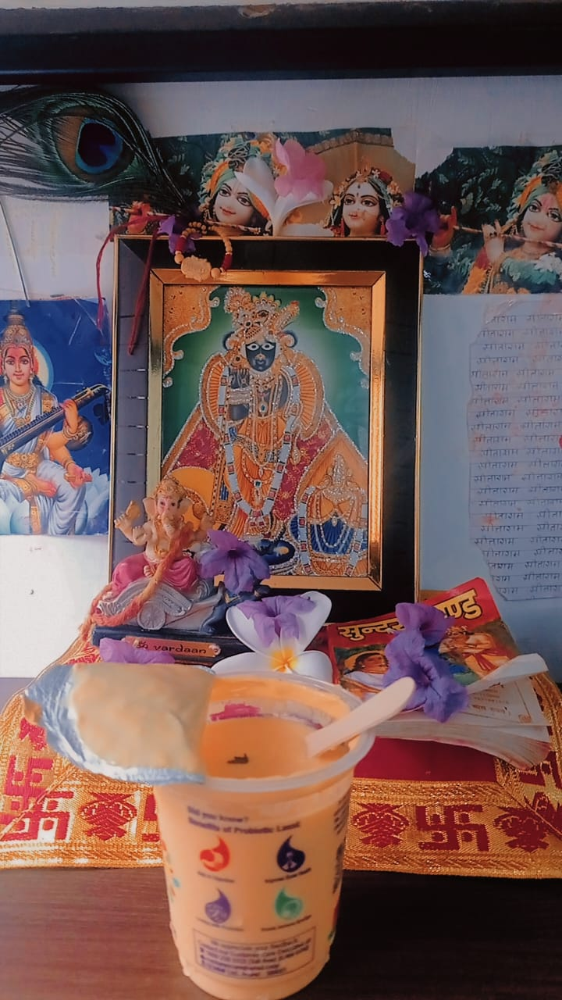
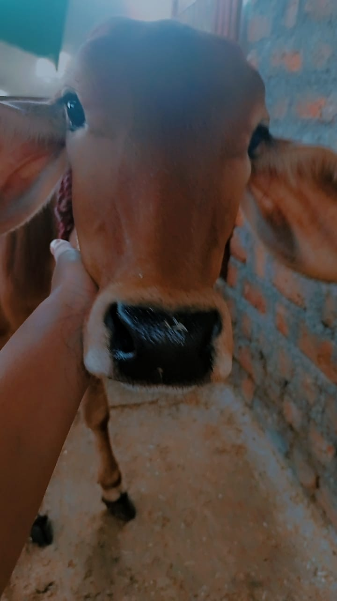
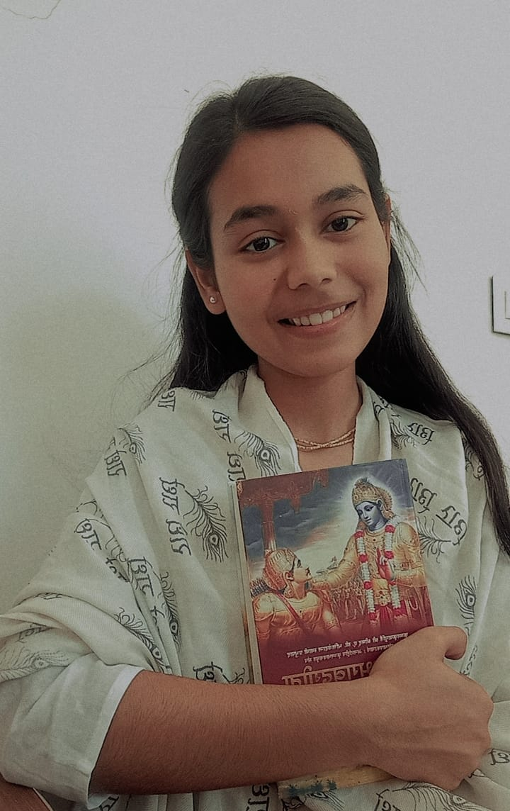
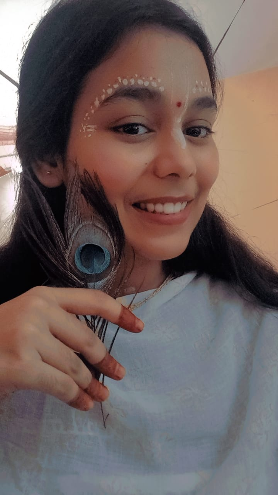

My spiritual journey began during the second year of my college life, sparked by some deeply transformative and serious life events. Until then, I believed in God, but my devotion lacked depth and commitment. It was during those trying times that I turned toward worshipping Lord Shiva, whose divine grace gradually led me deeper into the path of bhakti.
Through His blessings, my soul found solace and complete surrender at the lotus feet of Shri Shri Radha Madhav. My initial connection was with Lord Rama and His devoted sevak, Hanuman ji, and through them, I was drawn to the divine poetry of the Ramcharitmanas by Goswami Tulsidas ji.
But with time—and by the unfathomable mercy of the Lord—I came to experience the ever-present, all-pervading divinity of Shri Shri 108 Radha Madhav, and my life has never been the same since.

Offering Bhog to my Banke Bihari
When I entered into spirituality I knew almost nothing about its practises, rituals, and beliefs. SO, I started with the simplest thing,which is offering bhog to my almighty Banke Bihari ji.Everything in this world is owned by the Almighty "Krishna" and offering him his share is the simplest way to connect with him.

Gau Seva
My undertsanding about Krishna deepened when I started doing Gau Seva. I have one cow and her calf. I feed them, take care of them at home and worship them daily when I am at home. SInce, Krishna loves cows a lot, so I take blessings from them to enrich my love and bhakti towards him and Radha Rani my Kishori ju.

Shrimad Bhagwad Geeta
As time passed, I started reading Shrimad Bhagwad Geeta. It is a book of knowledge and wisdom. It is a book of devotion and surrender. It is a book of love and compassion. It is a book of peace and harmony. It is a book of truth and reality. It is a book of God and His creation. It is a book of Krishna and His devotees. I dont have words to describe the beauty of this book.
The spiritual path has transformed me in ways I never imagined possible. Through daily practice and devotion, I've developed greater patience, compassion, and inner peace.
What began as a search for answers has blossomed into a lifelong journey of self-discovery and connection with the divine. Each day brings new insights and opportunities for growth.

I have made a small temple in my room of shri Radha Madhav. I offer bhog to them daily and chant their names. They are my constant companions and I feel their presence in my life.Oh my Radha Madhav, I love you both so much. Please forgive me for all my sins and mistakes. I promise to do better in future. I love you both so much.
Daily Spiritual Practice
My day begins with a spiritual practice. I wake up and offer prayers to my Gurudev Bhagwan, then on bed I chant the names of Radha Madhav and then start my daily routine. Incorporating spiritual practices into my daily routine has been transformative.
These consistent practices have helped me maintain inner peace and spiritual connection throughout the day, regardless of external circumstances.I consider myself very fortunate to have found this path in life. I beleive that whatever is happening in my life, it is all part of the divine plan. I try to stay positive and believe that everything happens for a reason. I am grateful for all the blessings in my life and I try to share my love and kindness with everyone I meet.
I strongly believe that my devotion to Radha Madhav is a result of the immense love and blessings of great devotees. Their lives have deeply influenced me, and I constantly draw inspiration from their unwavering faith, selfless love, and complete surrender. Among these divine souls, Meera Bai holds a very special place in my heart. Her fearless devotion, poetic outpourings, and unshakable love for Shyamsundar inspire me to walk the path of bhakti with the same purity and dedication.
I also revere the great saint Tulsidas Ji, whose life and works have brought Rama Bhakti to countless hearts, and Shabari Maiya, whose patient, loving wait for Lord Rama exemplifies true devotion.